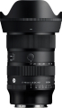

该镜头拥有F1.8大光圈以及整个变焦范围内媲美定焦镜头的出众画质，适用于APS-C画幅无反相机，突破了静态拍摄与视频表达的界限。
APSC画幅的最强变焦！媲美全幅标变镜头，挂机头的不二之选。
1.全程恒定1.8大光圈； 2.内变焦设计，有效防尘； 3.画质优秀，最大光圈也锐利； 4.做功优良； 5.对焦稳准狠； 6.拍视频稳定、安静； 7.镜身较轻，携带方便。
1.逆光下耀斑稍重； 2.暗角和畸变较明显，不过有机内矫正； 3.变焦范围稍窄，如果是16-56mm就完美了。
超规格镜头，适马1835继任，半画幅福音。 锐，色散控制略差，视频功能提升。
相当于17、23、28、40四支定焦镜头了，超规格福利。 非常锐利，视频功能优化，重量减轻，
色散控制略微差。 价格不低。 做工没有1835好。